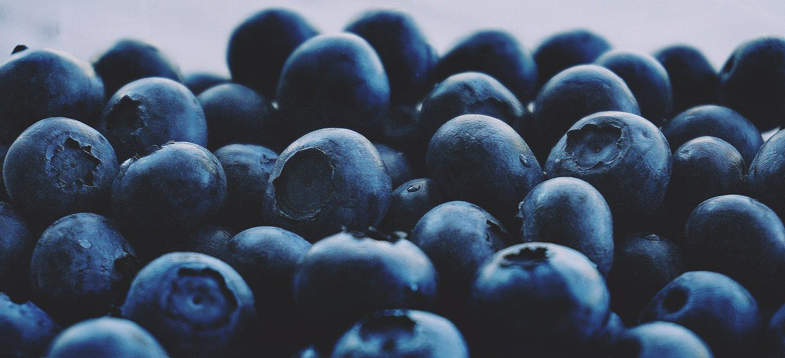

制作側の連想
エアホッケー台の部位を、配置図にしてみる
エアホッケー台の部位を図にしたもので、制作側の連想です。お店の理念・由来とは無関係で、実際の機器の仕様を示すものでもありません。 六つの部位に番号をふり、上の図と並べています。
凡例
六つの部位
- 1盤面パックがすべる、平らで広い面。中央に線と丸が引かれ、陣地を二つに分けている。
- 2フチ(サイドレール)盤面のまわりを囲む縁。すべってきたパックを跳ね返す役目をもつ。
- 3ゴール両端の中央にあいた開口。パックがここへ入ると得点になる。
- 4マレット手でつかんで動かす、持ち手つきの円盤。パックを打つための道具。
- 5パック盤面の上をすべる、平たい円盤。軽く浮いて素早く動く。
- 6送風孔盤面にびっしり並ぶ小さな孔。下からの空気が出て、パックを軽く浮かせる。
写真(イメージ)
写真(イメージ)



写真はイメージです。お店のものではありません。